Actions on Google is a new, exciting developer platform that lets you extend the functionality of the Google Assistant across almost 1 billion devices, including smart speakers, displays, phones, cars, TVs, watches, headphones, and more.
Not sure how to start developing your very first Action on Google? In this workshop, we'll learn how to build the Google Assistant apps using Dialogflow and Firebase, test, and, finally, prepare them for publishing in the Actions directory. No prior experience with the platform required.
The following tools are required:
Before we get started, please check your Google permission settings that are necessary to test the Action you'll build in this codelab:
To create an Actions project, follow these steps:
Intents are the main pillar of creating conversations on Dialogflow. Here is the description of intents from the official documentation:
The welcome intent is where you greet your users and prompt them to take their first action. This is the intent that gets called automatically by Google Assistant platform as soon as your app launches. When you create your Dialogflow agent, you get a welcome intent by default. We're now going to modify it to fit our needs.
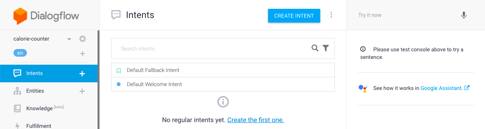
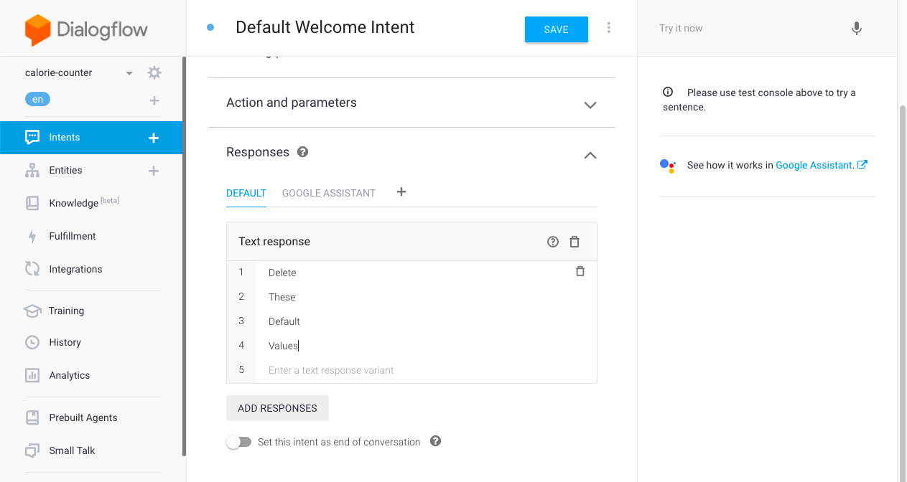
This is where we decide how we greet our users. One of these responses gets picked and returned to the user at random. Since we want to tell our user about how our action works and ask them about the food they want to check calorie of, we need to modify these responses. Therefore, delete all the default responses and add the following. You can customize them as you feel.
At the end, the Responses section should look like this:
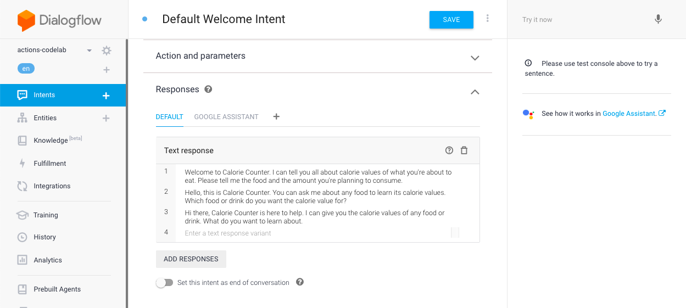
Now, click on the SAVE button next to the intent name.
Let's start with the official definition of an entity from the Dialogflow documentation.
We can think of entities as data sets/categories we expect our users to pass to us. These can be dates, names, addresses, numbers or food names. There is a set of system entities provided by Dialogflow. See the docs for details. Here are some of the system entities:
If you want to use any of these categories, you don't need to add anything additionally. Since food names are not covered by the system entities, we'll create an entity with the food options we support.
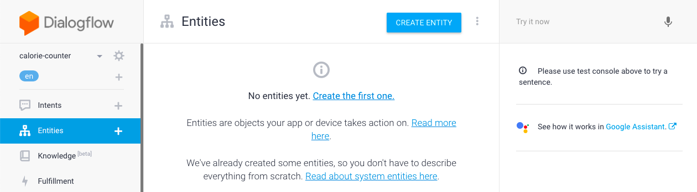
Name the entity as food_item.
Now, we're going to add the items to our entity. To make it easier and save some time, you can switch to the raw mode as shown:
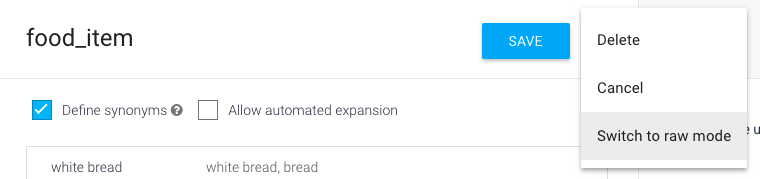
Then copying the below csv list over:
"apple","apple","apples"
"banana","banana","bananas"
"tomato","tomato","tomatoes"
"avocado","avocado","avocados"
"orange","orange","oranges"
"egg","egg","eggs"
"white bread","white bread","bread"
"hot dog","hot dog","hot dogs"
"coffee","coffee"
"hot chocolate","hot chocolate","hot cocoa","cocoa drink"
Now, if you switch back to the editor mode, it should look like this:
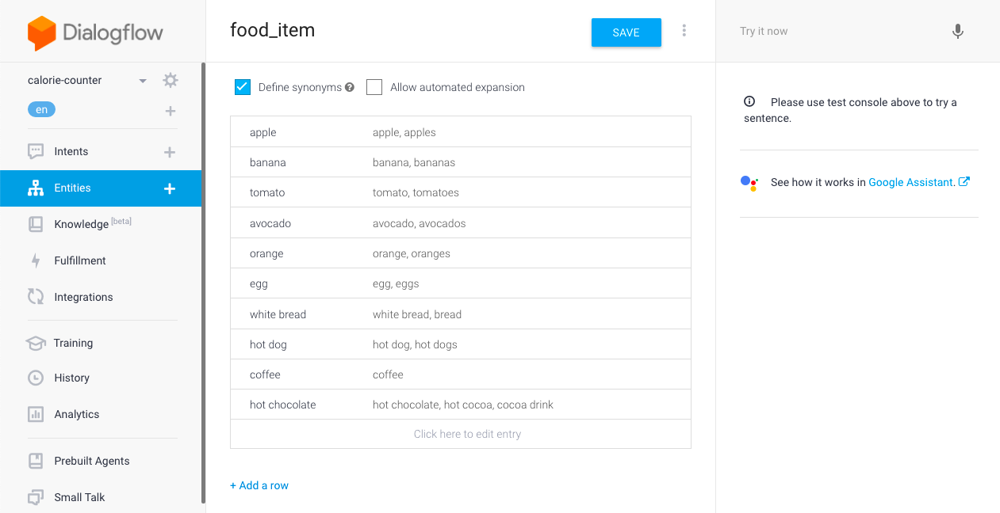
The left column is the name of the item. The right one contains synonyms. Dialogflow will map all the variations from the right column to the name, so you only need to worry about the name in your code.
Now, click on the SAVE button next to the entity name.
Let's get back to the Intents page and create a new intent using the CREATE INTENT button to capture our users' responses.
First, we need to name our intent. We're going to call this one Calculate Calorie.
Next, we need to add training phrases. These are trigger sentences we expect our users to say in order to get calorie info. Here is the official definition:
It's always a good idea to spend some time on training phrases to capture as many variations as possible.
Let's go ahead and add the following sentences as training phrases:
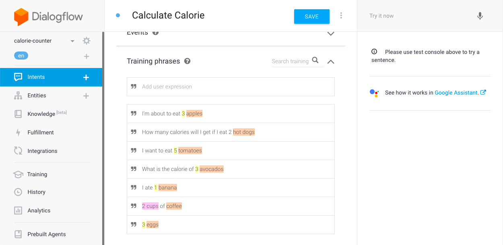
As you add the phrases, you might have noticed that some of the words get highlighted. These are the entities Dialogflow recognizes. If you click on them, you can see the which entity they matched. You can also modify the range of the entities or add new ones.
Now, scroll to the Action and parameters section and click MANAGE PARAMETERS AND ACTION.
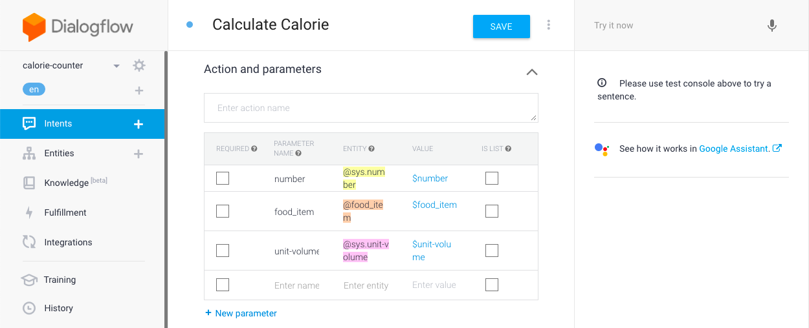
Let's look at each column to understand what they mean for us:
So, when we look at this table, we see that Dialogflow recognized 3 entities in our sentences. We only expect numbers and food items from user. While unit volumes would be useful in the full version of the action, for this workshop we'll go ahead and delete the unit-volume entity. But we still want to make sure we capture the number of cups. So, go back to training phrases, select 2 in the 2 cups of coffee sentence and pick @sys.number:number.
Now, let's click on the SAVE button and try out our intent quickly. Saving will start an AI training process. This is where Dialogflow uses your training phrases to generate other potential trigger phrases.
Once the agent training is completed, we can use the panel on the right to enter a user response to see how it gets parsed by Dialogflow. Let's enter I'm about to drink 1 cup of coffee and press enter.
We can see that 1 was recognized as number and coffee as a food_item
Before we proceed to the next step, there's one last thing to do. Go to parameters section and mark _fooditem as required.
Now, click on Define prompts and close the popup after adding the following prompts:
This will ensure that our intent doesn't get triggered without a food item.
Let's save to ensure our changes are not lost.
On the Calculate Calorie intent page, scroll to the bottom and expand the Fulfillment section. Instead of adding responses to our intent, we're going to use fulfillments. Before starting with the implementation, let's look at the description of fulfillments:
We use fulfillments to create dynamic responses. Now, let's click ENABLE FULFILLMENT to unlock the fulfillment section. Then, enable webhook call by toggling Enable webhook call for this intent. Save the changes.
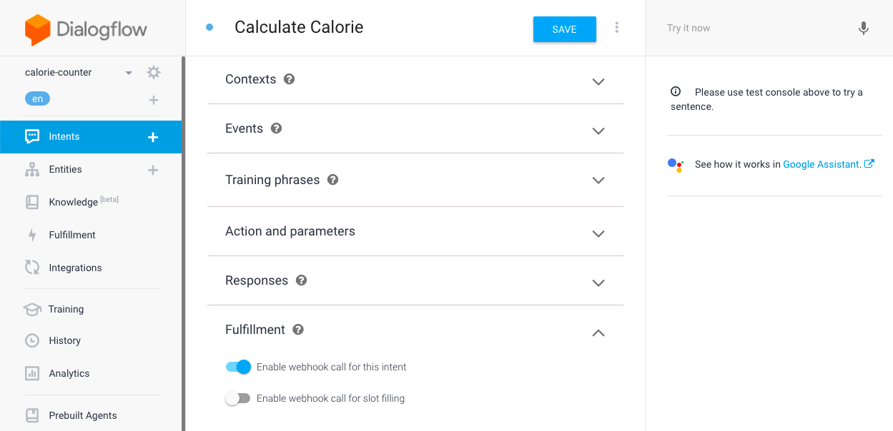
We're going to use Cloud Functions for Firebase for our fulfillment. Usually, we would need to create a webhook and pass it to Dialogflow but luckily, Dialogflow has an inline editor where we can create and deploy Cloud Functions. So, let's go ahead and enable the Inline Editor. You will get a half implemented, fairly helpful code.
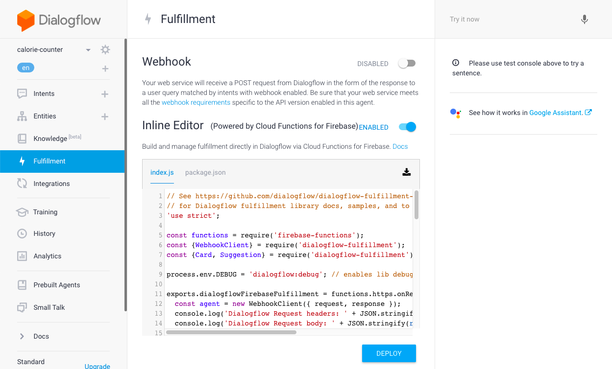
We're going to replace that code with the following:
'use strict';
const {dialogflow} = require('actions-on-google');
const functions = require('firebase-functions');
const app = dialogflow({debug: true});
app.intent('Calculate Calorie', (conv, {number, food_item}) => {
number = number || 1;
const calorieValue = calorieValueForFoodItem(food_item);
const totalCalories = calorieValue * number;
conv.ask('That is ' + totalCalories + ' calories. What other food do you want to check?');
});
function calorieValueForFoodItem(food_item) {
switch(food_item) {
case 'apple':
return 95;
case 'banana':
return 105;
case 'tomato':
return 105;
case 'avocado':
return 320;
case 'orange':
return 60;
case 'egg':
return 80;
case 'white bread':
return 66;
case 'hot dog':
return 150;
case 'coffee':
return 0;
case 'hot chocolate':
return 194;
}
}
exports.dialogflowFirebaseFulfillment = functions.https.onRequest(app);
Finally, if our user is done using our app, we should allow them to leave the conversation. In order to do that, we're going to create a new intent. The intent name here is not important but let's call it End Conversation.
Now, expand the Events section and add actions_intent_CANCEL as an event. This will allow our intent to get triggered if user wants to leave the app using phrases like goodbye or cancel.
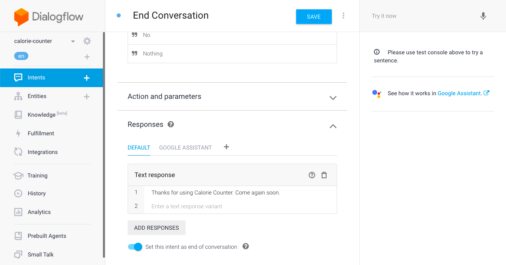
Next, let's add some training phrases that might not be covered by the system by default. Go ahead and add the floowing training phrases:
Scroll down and add Thanks for using Calorie Counter. Come again soon. as a response. Then toggle the Set this intent as end of conversation option.
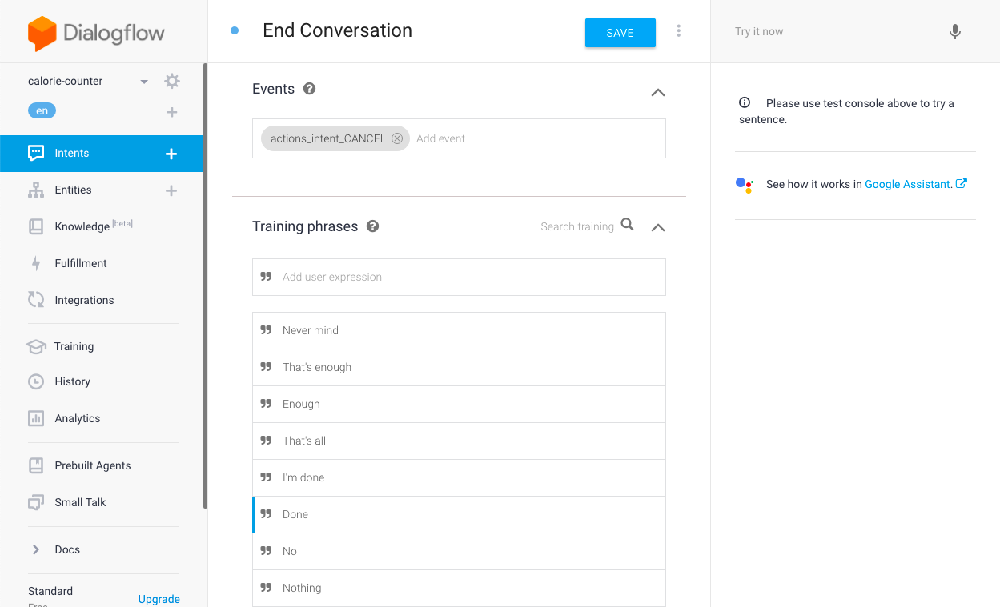
We can now save the intent and test our action.
When users say "Talk to Calorie Counter", it triggers the welcome intent which acts as an entry point for users to start a conversation with your Action. However, most of the users would rather jump to the specific task they want to accomplish than start at the beginning of the conversation every time. You can provide explicit deep links as shortcuts into the conversation to help users get things done more efficiently.
We're going to add the Calculate Calorie intent for deep linking. It means that users can skip the welcome intent and explicitly invoke the Calculate Calorie intent as a deep link (for example, "Hey Google, talk to my test app about apple"). The training phrases and parameters you defined for the Calculate Calorie intent enable Dialogflow to extract the food parameter when users invoke this deep link.
To add our intent for deep linking, follow these steps:
The Google Assistant will now listen for users to provide a food name in their invocation and extract the food parameter for our fulfillment.
In the final section, we'll prepare the Actions project draft for release. This is when we specify the information users see about our Action in the Actions directory and can also configure other settings (for example, to control which device types and regions our Action will be available in).
Here are the steps to pick a display name for our Action:
To add the directory information for our Action, we're going to follow these steps:
Please take your time to explore the following resources to learn more about Actions on Google:
Console: console.actions.google.com
Build with Templates: developers.google.com/actions/templates
Build with Sample Actions: developers.google.com/actions/samples/actions
Documentation for Actions on Google: developers.google.com/actions
Documentation for Dialogflow: dialogflow.com/docs
Codelabs: codelabs.developers.google.com
Sample code on Github: https://github.com/actions-on-google